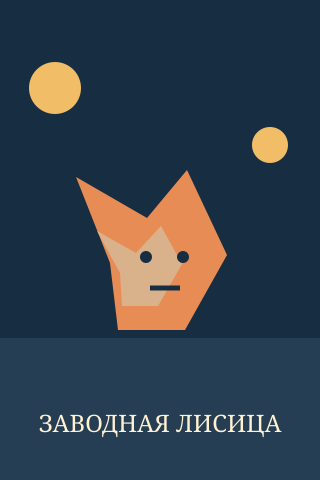
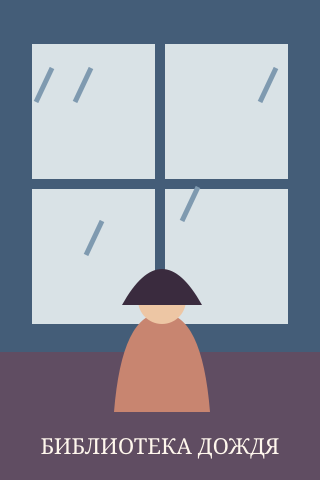

Архипелаг над облаками
Юная картографка ищет пропавший остров на краю неба.
Рейтинг: 4,9 из 5. .
Ищите новые серии, знакомьтесь с авторами и резервируйте тома в библиотеке MangaNest.
Юная картографка ищет пропавший остров на краю неба.
Рейтинг: 4,9 из 5. .

Механическая лиса помогает ученику мастера раскрыть тайну старого города.
Рейтинг: 4,7 из 5. .

Каждая книга в библиотеке хранит воспоминание своего читателя.
Рейтинг: 4,8 из 5. .
Сейчас выдана.
Проводница ночного экспресса доставляет пассажиров на орбитальную станцию.
Рейтинг: 4,9 из 5. .
Сложенный из бумаги дракон оживает и зовёт мастерицу в горы.
Рейтинг: 4,6 из 5. .
Друзья проводят последние каникулы у моря и строят планы на будущее.
Рейтинг: 4,5 из 5. .
Сейчас выдана.